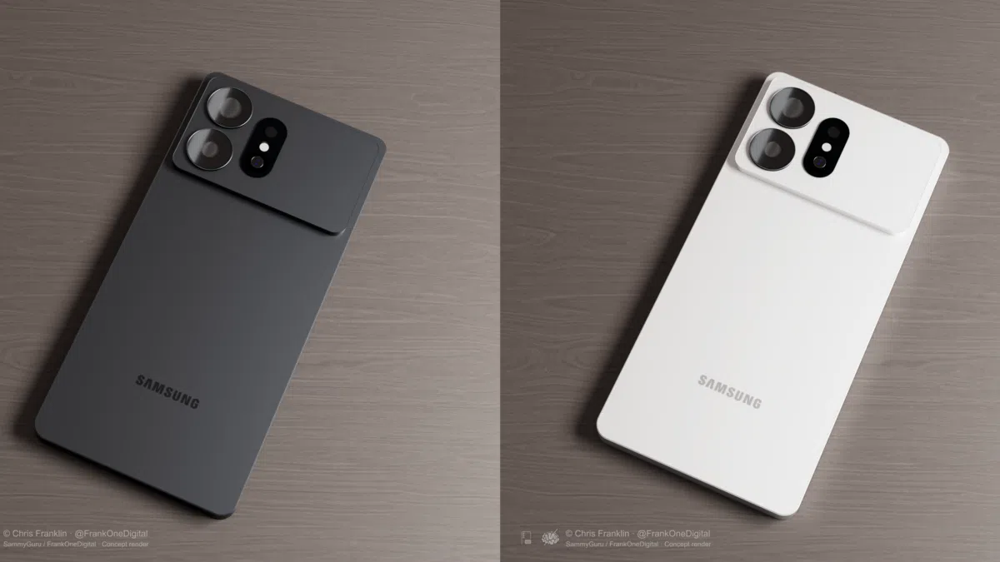
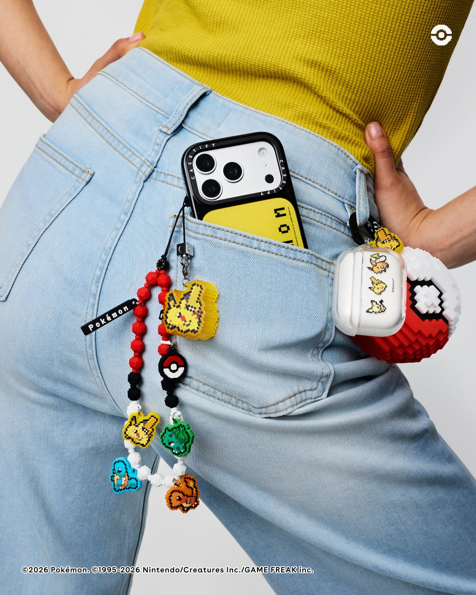
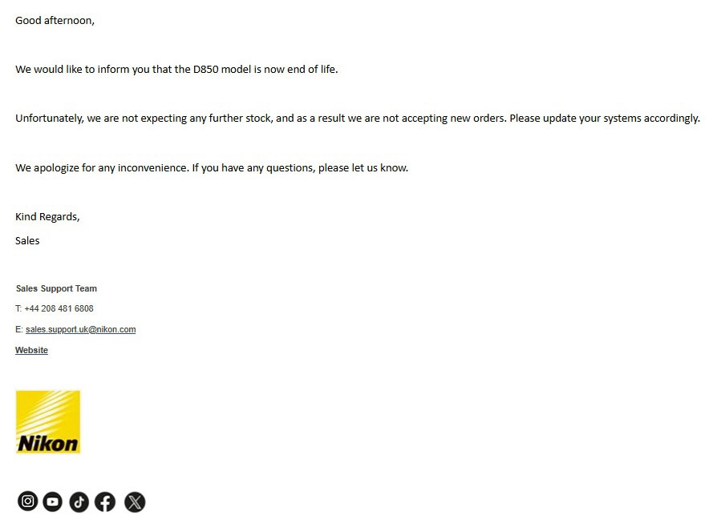
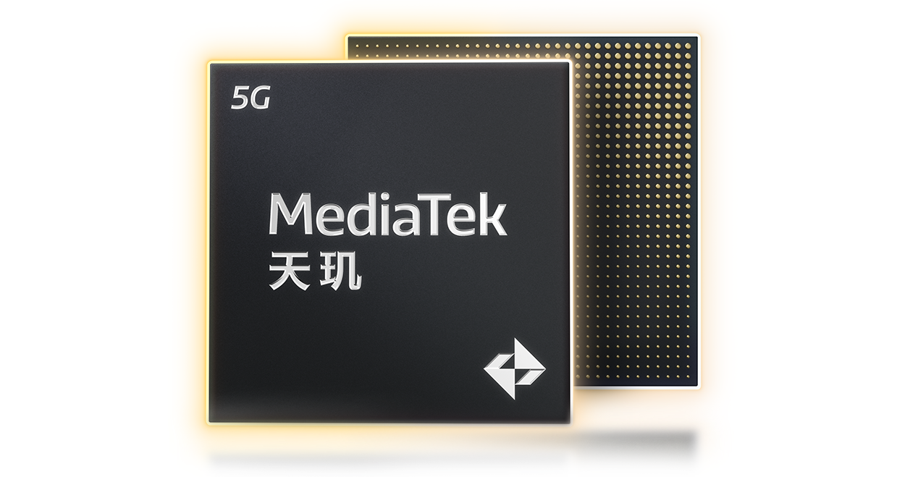
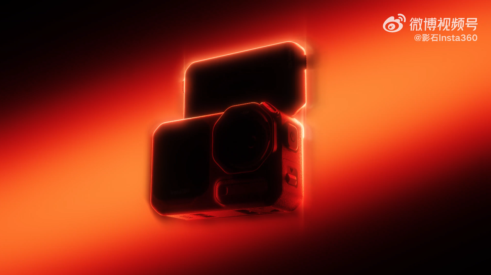
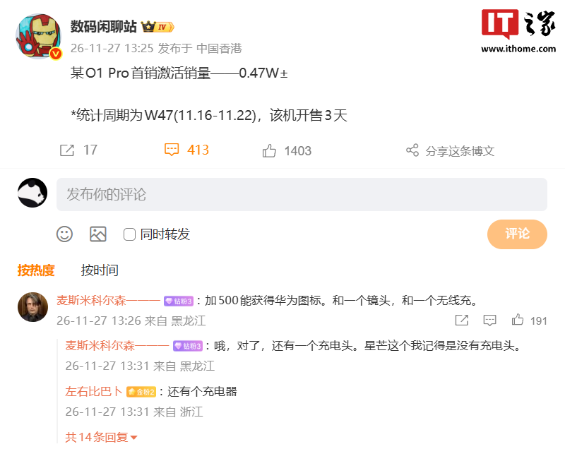
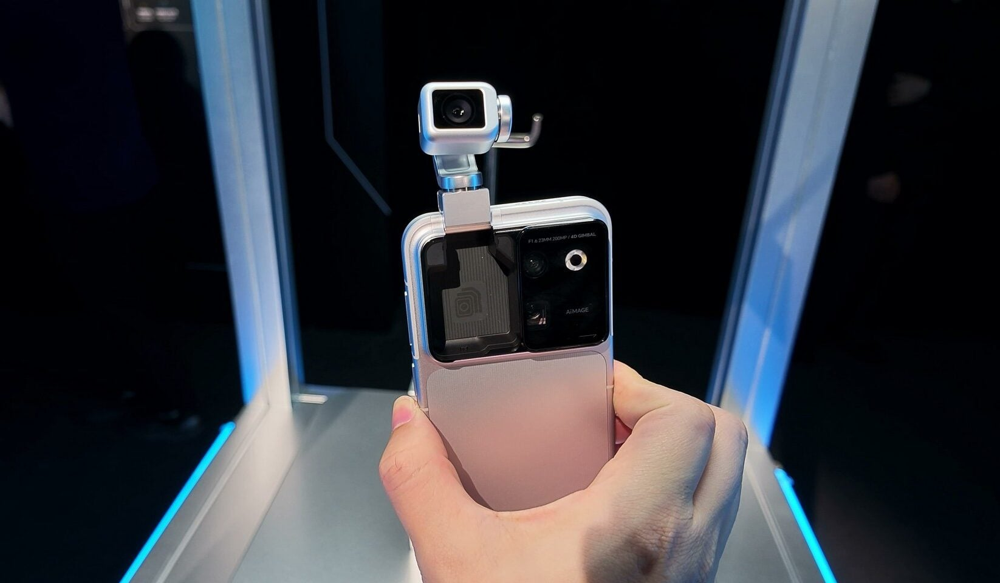
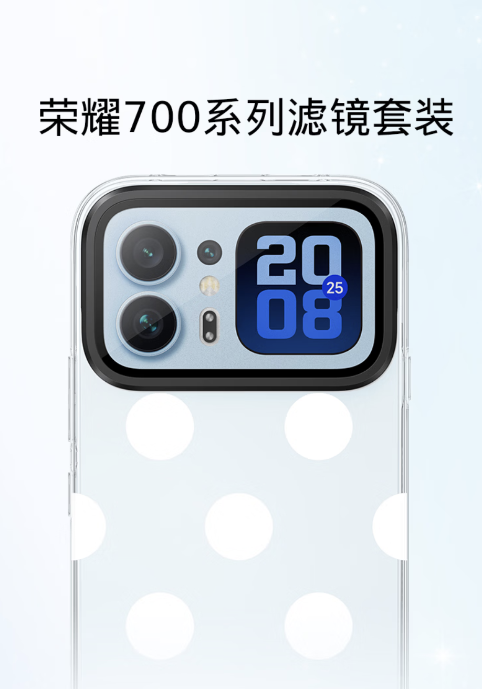
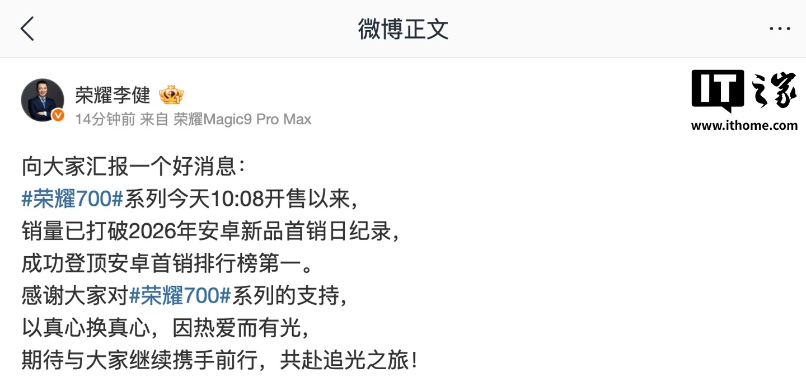
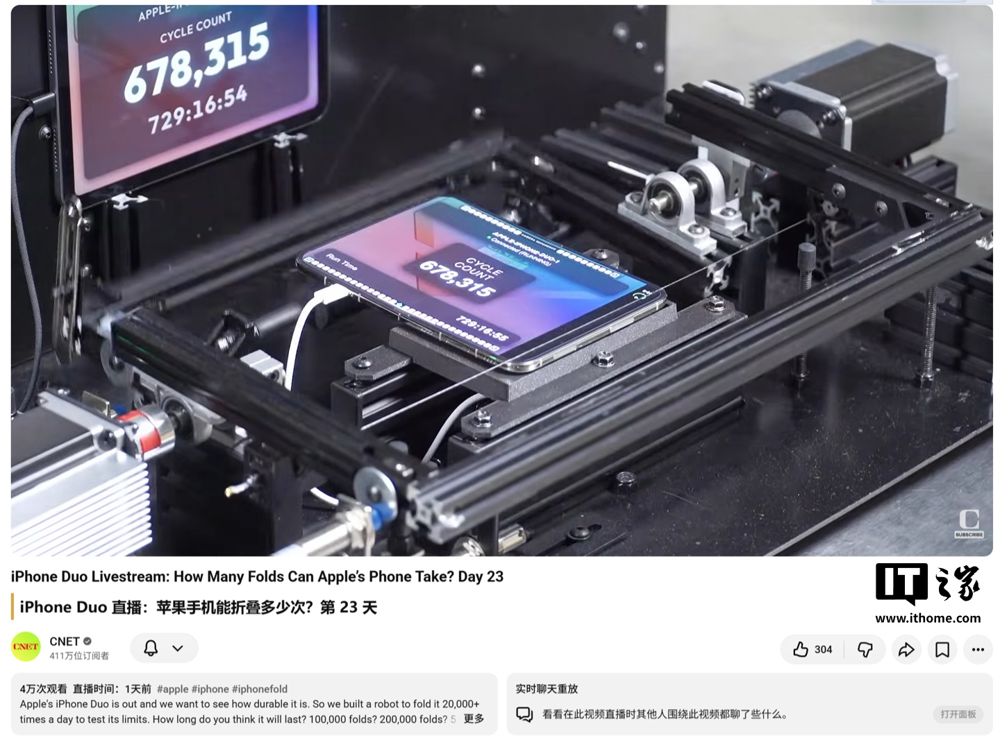

뉴스
기술의 변화, 매일 한눈에.
카메라 · 스마트폰 · AI, 해외 테크 소식을 모아 전합니다.
최근 발행2026-11-28
새로 들어온 소식

최신 뉴스
전체 4,664개 기사
Samsung Galaxy S27 Pro/Ultra 스마트폰 출시 카운트다운, 내부 부품 먼저 유출

Samsung Galaxy S27 Pro/Ultra 스마트폰 목업 유출: 매트릭스 카메라 아일랜드 디자인

Samsung, Galaxy S26 등 스마트폰에 Apple식 '프라이빗 클라우드' 도입 위해 SPAC 프레임워크 구상 중

Samsung Galaxy A38 스마트폰 벤치마크 점수 첫 공개: 자사 엑시노스 대신 MediaTek Dimensity 7500 칩 탑재

포켓몬 30주년 기념, CASETiFY 픽셀 아트 디지털 액세서리 시리즈 공개
2027년 팬톤 올해의 컬러 공개, 모토로라 스마트폰 '아쿠아 스플래시' 블루 그린 새 옷 입는다

클래식 카메라 Nikon D850 단종 공지: 더 이상 공급 및 신규 주문 불가

MediaTek: Dimensity 플래그십 스마트폰 칩셋은 여전히 정상적으로 반복되며, 2027년 예정대로 업데이트될 것

라이카 Q3 43 모노크롬 흑백 카메라 12월 3일 출시 예정, 가격 7,490유로
교세라, 5개 회계연도 내 반도체 부품 분야에 8,100억 엔 투자
KT, Samsung Galaxy A18 LTE 기반 '산리오 캐릭터 테마 아동 스마트폰' 출시: 다양한 컬래버레이션 액세서리 제공
동일 가격대 스마트폰과 iQOO Neo12 비교: 자격 및 매개변수 검증 실용 목록

iOS 28, 아이폰 알림에 큰 변화 가져올 수 있다

Insta360 Ace Pro 3, 12월 1일 가변 조리개 및 교체형 렌즈와 함께 출시 예정

Huawei Star OSTA O1 Pro 바 타입 스마트폰, 출시 3일 만에 약 4,700대 판매

Honor의 Robot Phone 2, 생산 지연 직면... 카메라 중심 스마트폰 개발 중

Honor 700 시리즈 스마트폰 전용 필터 세트 출시: 스마트폰 케이스 + 블랙 미스트 + 스타 필터 렌즈 포함, 299위안

리젠: Honor 700 시리즈 스마트폰, 2026년 안드로이드 신제품 첫 판매일 기록 경신

CNET, Apple iPhone 듀오 67만 8천 회 이상 개폐 테스트 결과 닫힘 오류 발생
중국 5G RedCap 칩 기업 추천: XingSi 반도체, 5G 경량 IoT 시장에 진출하여 국산 셀룰러 기저대역 혁신에 주력

Apple 공식 웹사이트에 mophie Frost 스탠드 보호 케이스 출시: iPhone 17/18 Pro/Air 시리즈 모델용, 398위안
검색 결과가 없습니다
다른 검색어를 입력하거나 필터를 초기화해 보세요.